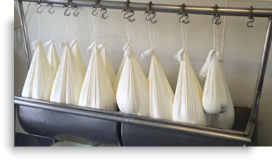
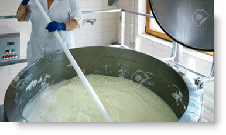
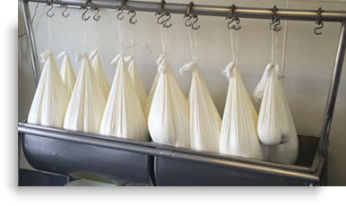
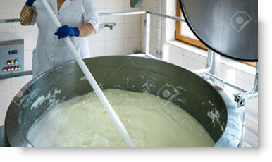

Our Mission
OUL aims to facilitate the increased use of renewable energy by developing a specialist facility which will allow producers of renewable biogas upgrade that biogas to renewable biomethane.
Ormonde Upgrading Limited ('OUL') is a subsidiary of Ormonde Organics Holdings Limited (OOHL, Ireland’s leading processor of organic wastes. Its activities include composting, thermal treatment and the generation of renewable biogas. OUL aims to overcome barriers in renewable biogas distribution and promote the transition to green gas from the rural virtual supply chain.
OUL aims to facilitate the increased use of renewable energy by developing a specialist facility which will allow producers of renewable biogas upgrade that biogas to renewable biomethane.
Renewable biomethane is a direct substitute for natural gas and can be used to displace fossil fuels in domestic heating (9% of Ireland’s GHG emissions) and industry (9% of Ireland’s GHG emissions). Renewable biomethane can also be utilised effectively in other sectors, such as transport and electricity generation. Importantly as renewable biomethane is a direct substitute for natural gas, it can be used by energy consumers who currently use fossil natural gas without them having to make any material alterations to their existing energy infrastructure.
A new off grid business model will be used by OUL to provide consumers seeking to decarbonise their energy needs with access to renewable biomethane. OUL is being supported in this initiative by InterReg North West Europe through its participation in the RegEnergy
 



Whey Permeate(WP) is a by-product of the dairy industry, obtained during cheese production. A typical cheese WP consists mainly of water, approximately 4-5% of lactose, nitrogenous components (0.9%), minerals and traces of vitamins. The presence of lactose and proteins represents a potential source of re-usable substances, but which are not properly valorised, and whose disposal generates adverse consequences for the environment. According to the European Dairy Association, the EU produces around 10 M tons/year of cheese (EDA, 2018), which corresponds to 4 M tons/year of WP.
Currently, a significant amount of WP is pumped untreated into rivers and water bodies, scattered on the soil, or given in an unprocessed form as animal feed and sold for little or no profit to farmers. WP is an important pollutant, demonstrating between 35-50 g/l Biochemical Oxygen Demand (BOD) and around 60-80 g/l Chemical Oxygen Demand (COD). A significant amount of WP is currently used for farmland irrigation, but its use as a soil fertiliser is limited to about 45-90 tons/acre without damage to watercourses, crop yield, and soil structure. Whilst technologies are now available for whey permeate treatment, the current focus of dairy companies is typically on facilities for cheese and whey protein production, with limited investment in developing innovative biorefining processes and facilities to manage WP.